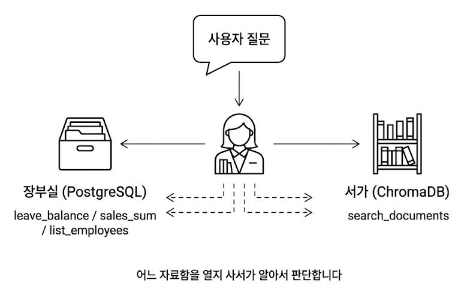

챕터 6. 연차도 규정도 한번에. ReAct Agent와 Tool Calling
이번 챕터가 끝나면
- @tool 데코레이터로 DB 조회, 문서 검색을 에이전트가 선택할 수 있는 도구로 감쌉니다
- ReAct 패턴(Reason, Act, Observe 반복)으로 복잡한 질문을 단계적으로 해결합니다
- 에이전트가 어떤 도구를 호출했는지로 질문 유형(정형·비정형·복합)을 사후 판정합니다
- "A 사원 연차 며칠? 그리고 신청 절차도 알려줘" 같은 복합 질문에 한 번의 답으로 응답합니다
준비하기. 실습 시작 전 한 번만 설정
1. 실습 폴더 이동
파일 구조는 다음과 같습니다.
2. 실습 환경 구축
이전 챕터 Docker가 떠 있으면 포트 충돌
챕터 2의 Docker가 실행 중이라면 cd ex02 && docker compose down으로 먼저 종료해 주세요. 같은 포트(5432)를 씁니다.
3. 사용할 라이브러리
| 패키지 | 역할 |
|---|---|
langchain |
체인·에이전트 프레임워크 |
langchain-ollama |
Ollama LLM 연결 (Tool Calling 지원 모델 필수) |
langchain-chroma · chromadb |
벡터 DB 래퍼·저장소 |
psycopg2-binary |
PostgreSQL 드라이버 |
fastapi · uvicorn |
웹 API 서버 |
Tool Calling 지원 모델을 써야 합니다
모든 Ollama 모델이 Tool Calling을 지원하지는 않습니다. llama3.1:8b는 추론과 Tool Calling을 둘 다 안정적으로 해내서 이 챕터에 적합합니다 (16GB RAM에서 무리 없이 돌고 한국어 품질도 무난). 반면 deepseek-r1은 추론에 특화된 대신 Tool Calling이 지원되지 않습니다. 에이전트가 도구를 스스로 호출해야 하는 이 챕터에서는 쓸 수 없으니 llama3.1:8b로 교체해 주세요.
.env 핵심 상수입니다. 챕터 5에서 쓰던 .env와 비교해 LLM 모델이 바뀌고, DB 접속 정보가 추가됩니다.
| 상수 | 기본값 | 역할 |
|---|---|---|
LLM_PROVIDER |
ollama |
LLM 제공자 (ollama 또는 openai). 이 챕터는 Tool Calling 지원 모델만 가능 |
OLLAMA_MODEL |
llama3.1:8b |
챕터 5의 deepseek-r1:8b에서 변경. Tool Calling 지원 |
OPENAI_MODEL |
gpt-4o-mini |
OpenAI 쓸 때 권장. Ollama보다 Tool Calling이 안정적 |
POSTGRES_* |
rag_db / rag_user / ... |
챕터 2에서 띄운 DB 접속 정보 |
CHROMA_PERSIST_DIR |
./data/chroma_db |
ex06 자체 벡터 DB. 첫 실행 시 data/docs/로부터 자동 구축 |
RETRIEVER_TOP_K |
3 |
search_documents 도구가 가져올 청크 수 |
4. 실습 순서
src/mcp_tools.py. @tool 4개 (연차, 매출, 직원, 문서)src/agent.py. ReAct 에이전트 조립 + 사후 분류python run.py. 서버 실행 후http://localhost:8000/chat에서 복합 질문 테스트
6.1 RAG가 답 못 하는 질문

목요일 오후 4시. 창밖이 노랗게 물들고 있었습니다. 키보드 소리가 드문드문 울리는 사무실이었습니다.
챕터 5에서 채팅 UI를 띄워 두고 동료들이 한 번씩 써 보게 했습니다. 첫 반응은 나쁘지 않았습니다. 그런데 얼마 후 다른 동료가 노트북을 들고 책상 앞까지 왔습니다.
동료가 채팅창에 입력을 시작했습니다.
잠시 후 돌아온 답변은 "해당 직원에 대한 정보를 찾지 못했습니다"였습니다.
오픈이는 당황해서 질문을 바꿔 넣어 봤습니다. "이번 달 매출 합계." 같은 대답. "직원 목록 보여줘." 역시 같은 대답.
동료가 돌아간 자리에는 노트북 화면 위의 에러 문구만 남았습니다.
사서는 여전히 서가만 뒤지고 있었다. 챕터 2에서 만들어 둔 장부실이 옆방에 있는데, 그쪽 문을 열 줄 모른다.
옆자리 팀장이 모니터를 흘끔 보고 한 마디 던졌습니다.
지금의 사서는 서가에서 규정집만 꺼내 줍니다. 하지만 'A 사원'은 서가 어디에도 없습니다. 직원 연차 정보는 책이 아니라 PostgreSQL 장부에 적혀 있습니다. 장부실을 여는 법을 배우지 못한 사서는 "없어요"만 반복했습니다.
6.2 정형 데이터와 비정형 데이터
지금 만들어 둔 것을 정리하면:
- 챕터 2: 직원, 연차, 매출을 PostgreSQL에 저장하는 API
- 챕터 4~5: 사내 문서를 벡터 DB에 넣고 검색, 답변하는 RAG 엔진
둘이 따로 놀고 있습니다. AI 비서는 RAG만 쓸 줄 알지 DB에 접근하는 법을 모릅니다.
| 질문 | 경로 |
|---|---|
| "A 사원 연차 몇 개?" | PostgreSQL 조회 (정형) |
| "연차 신청 절차?" | 취업규칙 문서 검색 (비정형) |
| "A 사원 연차 + 신청 절차?" | 둘 다 (복합) |
진짜 비서가 되려면 이 둘을 상황에 맞게 고르거나, 필요하면 동시에 써야 합니다.
6.3 사서가 두 자료함을 연다
팀장이 말한 "장부까지 꺼내는 사서"를 그려 보겠습니다. 지금까지 서가 하나만 맡던 사서에게 옆방 장부실 열쇠를 새로 쥐여 주는 장면입니다.
며칠 후 복잡한 질문.
한 명의 사서가 자료의 성격을 보고 장부실과 서가를 스스로 오갑니다. 바깥에 안내 직원을 따로 두고 "너는 장부실, 너는 서가" 하고 미리 나누지 않습니다. 사서가 질문을 보자마자 필요한 자료함을 직접 엽니다.

AI 비서도 같은 구조가 됩니다. 한 명의 에이전트가 질문을 보고 장부 도구(leave_balance 등)를 열지, 문서 도구(search_documents)를 열지, 둘 다 열지 판단합니다. 판단 주체는 에이전트 속 LLM 자신이지, 바깥의 분류기가 아닙니다. 이번 챕터의 통합 에이전트가 이 "만능 사서"입니다.
6.3.1 파이프라인에서 에이전트로 (챕터 5 엔진은 유지됩니다)
챕터 5에서 만든 건 고정된 파이프라인이었습니다. 질문이 들어오면 언제나 같은 순서로 흐릅니다. Retriever로 문서 조각을 가져오고, Prompt로 감싸고, LLM에 보내고, 답을 돌려받죠. 입력 질문이 "휴가 규정"이든 "A 사원 연차"든 똑같은 경로를 탑니다. 문제는 그 경로 중간에 PostgreSQL 장부를 들여다보는 단계가 없다는 점입니다. 체인을 새로 짠다 해도 "이 질문에는 DB를 볼까 문서만 볼까?"를 실시간으로 판단할 자리가 없습니다. 고정 파이프는 분기가 약합니다.
에이전트는 다릅니다. 질문을 받으면 LLM이 먼저 "지금 어느 자료함을 열어야 하지?"를 스스로 판단합니다. 결과를 보고 "충분한가, 아니면 한 곳 더?"를 다시 판단합니다. 이 생각(Reason) → 행동(Act) → 관찰(Observe) 루프가 ReAct 패턴입니다. 경로가 질문마다 달라지죠.
| 항목 | LCEL 체인 (챕터 5) | ReAct 에이전트 (이 챕터) |
|---|---|---|
| 흐름 | 고정 순서. Retriever → Prompt → LLM | 동적. 질문을 보고 매 턴 경로 결정 |
| 도구 선택 | 없음 (문서 검색만) | LLM이 스스로 고름 |
| 분기 | 파이프를 짤 때 하드코딩 | 런타임에 판단 |
| 적합한 질문 | 순수 문서 Q&A | 정형·비정형·복합을 한 창구로 |
"그럼 파이프라인에서 Tool Calling만 붙이면 되지 않나?" 사실 LCEL에서도 llm.bind_tools([...])로 도구를 묶을 수 있고, LLM이 어떤 도구를 호출할지 고르는 것까진 됩니다. 여기까지는 체인 한 번으로 충분하죠. 진짜 문제는 루프입니다. 도구가 답을 내놓으면 LLM은 그걸 보고 "충분한가? 한 번 더?"를 다시 판단해야 합니다. LCEL 체인은 입력 → 출력 한 번 흐르고 끝나는 구조라 이 재판단을 자동으로 돌리지 않습니다. 필요할 때마다 수동으로 while 루프를 짜야 하죠.
ReAct 에이전트(AgentExecutor)는 그 루프를 한 줄 호출로 자동화합니다. 도구 선택 → 실행 → 결과 관찰 → 다음 판단 → (끝까지) 를 AgentExecutor가 알아서 돌립니다. 복합 질문("A 사원 연차 + 신청 절차")처럼 도구를 두세 번 연달아 써야 할 때 이 자동 루프가 빛을 발합니다.
그림으로 보면 파이프라인이 어디에 박혀 있는지 한눈에 보입니다. 바깥을 ReAct 루프가 감싸고, 그 안에서 에이전트가 도구 4개를 골라 씁니다. 그중 search_documents 도구의 속을 열어 보면 챕터 5에서 만든 LCEL 파이프라인이 그대로 들어 있습니다.
search_documents만 챕터 5 파이프라인을 품고 있습니다.정리하면 세 층입니다. 바깥층은 ReAct 루프가 질문마다 경로를 정합니다. 중간층은 도구 4개 중 어떤 걸 쓸지 선택하는 자리입니다. 안쪽층이 search_documents 안에서 돌아가는 챕터 5의 LCEL 파이프라인이고요. 복합 질문이 들어오면 바깥 루프가 두 번 돕니다. 먼저 leave_balance로 SQL 한 번, 다음 턴에 search_documents 안의 파이프라인이 문서 한 번. 두 결과를 합쳐 최종 답변을 만듭니다.
여기서 중요한 건 챕터 5 엔진을 버리지 않는다는 점입니다. rag_chain.py의 LCEL 파이프라인은 그대로 보존됩니다. 다만 이번 챕터에서는 그 엔진을 에이전트의 도구 하나(search_documents)로 감싸 넣고, 옆에 leave_balance·sales_sum·list_employees 세 도구를 나란히 둡니다. 엔진을 버리는 게 아니라 더 큰 판단 구조(에이전트) 아래에 배치하는 것입니다. 다음 챕터 7, 10도 이 에이전트 구조를 그대로 이어받습니다.
다음 절부터 이 사서의 손에 들릴 도구를 하나씩 만들어 보겠습니다.
6.4 MCP Tools: @tool 데코레이터
사서가 손에 들 자료함(도구) 을 네 개 준비합니다. 앞의 세 개는 장부실, 마지막 하나는 서가에 있습니다.
| 도구 | 역할 | 데이터 원천 |
|---|---|---|
leave_balance |
특정 직원 연차 잔여일 | PostgreSQL employees + leave_balance |
sales_sum |
부서·기간별 매출 합계 | PostgreSQL sales |
list_employees |
이름·부서로 직원 목록 | PostgreSQL employees |
search_documents |
문서 기반 질문 답변 | ChromaDB (챕터 4~5 파이프라인) |
6.4.1 @tool vs MCP — 도구 호출의 두 가지 방식
AI 에이전트가 외부 기능을 호출하는 방법은 크게 두 가지가 있습니다. 하나는 Anthropic이 만든 MCP(Model Context Protocol) 입니다. 도구를 별도 서버로 분리하고 표준 메시지 규격으로 통신하는 방식이라 어떤 프레임워크에서든 같은 도구를 재사용할 수 있습니다. 다른 하나는 LangChain의 @tool 데코레이터입니다. 같은 프로세스 안에서 함수를 직접 호출하니 설정이 간단합니다.
@tool 데코레이터와 MCP 방식의 도구 호출 비교. 전자는 에이전트와 함수가 한 프로세스, 후자는 MCP 서버로 분리된 별도 프로세스입니다MCP 쪽 화살표에 적힌 stdio · HTTP 는 에이전트와 MCP 서버가 대화할 때 쓰는 통신 규격입니다. 두 프로세스가 따로 떠 있으니 직접 함수 호출은 못 하고, 중간에 약속된 메시지 형식이 필요합니다. 같은 컴퓨터 안에서는 stdio(표준 입출력 스트림)로, 원격 서버는 HTTP로 메시지를 주고받습니다. Claude Desktop·Cursor·IDE 에이전트 같은 여러 앱이 같은 MCP 서버에 붙을 수 있는 이유도 이 표준 규격 덕분입니다. 반대로 @tool은 파이썬 함수를 그대로 호출하므로 이런 프로토콜이 필요 없습니다.
핵심 개념은 같습니다. "AI가 함수의 이름과 설명을 보고 스스로 호출한다." 이 책에서는 @tool로 원리를 익혀 보겠습니다. 원리를 이해하면 MCP로 확장하는 건 어렵지 않습니다.
각 도구 함수에 @tool 데코레이터와 독스트링(설명)을 붙여두면 LangChain이 도구의 이름과 설명, 파라미터를 자동으로 읽어갑니다. 에이전트는 이 정보를 보고 "이 질문에는 어떤 도구가 맞지?"를 판단합니다. 이처럼 LLM이 상황에 맞는 도구를 스스로 골라서 호출하는 기능을 도구 호출(Tool Calling) 이라고 합니다. 모든 LLM이 지원하는 건 아니라서 OpenAI의 gpt-4o-mini나 Ollama의 llama3.1:8b처럼 Tool Calling을 지원하는 모델을 골라야 합니다.
@tool 데코레이터. 파이썬 @decorator 문법은 함수 정의 위에 붙여 함수를 다른 함수로 감싸 주는 표시입니다. @tool은 LangChain이 제공하는 데코레이터로, 일반 함수를 LLM이 호출 가능한 Tool 객체로 자동 변환해 줍니다. 함수 이름·인자 타입·반환 타입·docstring을 읽어 스키마를 만들고, 에이전트에게 "이 도구는 (emp_no: str) -> dict를 받습니다"처럼 구조화된 정보로 전달합니다. 직접 Tool(name=..., func=..., description=...)를 수동 조립하지 않아도 됩니다.
docstring. 함수 본문 첫 줄에 놓이는 삼중 따옴표 문자열("""...""")입니다. 원래는 사람 개발자용 설명이지만, @tool에서는 LLM이 도구를 고를 때 읽는 사용 설명서로 쓰입니다. "언제 이 도구를 쓰는가"를 명확히 적어야 에이전트가 올바르게 선택합니다. 예: """주어진 사번의 연차 잔여일수를 반환합니다."""
6.4.2 도구 구현하기
src/mcp_tools.py에 네 개의 함수 TODO가 있습니다. 각 TODO의 pass를 지우고 @tool과 docstring, 인자를 채웁니다.
run_query·get_vectorstore는 src/db_helper.py의 보조 함수로, PostgreSQL 커넥션과 ChromaDB 컬렉션을 감싼 헬퍼입니다. 직접 작성하지 않고 import만 합니다.
나머지 두 개는 DB 조회의 다른 변형입니다. sales_sum은 집계 쿼리(SUM + GROUP BY), list_employees는 동적 WHERE 조립(부서·이름 필터).
도구의 docstring이 LLM의 판단 근거가 되므로 "이 도구는 언제 써야 하는가"를 명확히 써 주세요. 설명이 불명확하면 에이전트가 엉뚱한 도구를 고릅니다. AI 비서에게 각 도구가 무슨 일을 하는지 제대로 알려줘야 제대로 골라 쓰는 것과 마찬가지입니다.
MCP Tools? Tool? 이 책에서는 LangChain @tool로 만든 함수를 포괄해 MCP Tools라고 부릅니다. Model Context Protocol의 의미를 확장해 "AI가 호출 가능한 도구 계층"이라는 개념적 명칭으로 씁니다. 구현 수단은 LangChain의 Tool Calling이지만, 같은 역할(도구 호출 계층)을 MCP 서버로도 구현할 수 있습니다.
6.5 ReAct 패턴 & 에이전트 조립
챕터 1에서 "리프레시 데이 몇 번 남았어?"라는 질문을 던졌습니다. LLM이 규정을 읽고 "매월 1회 → 6개월이면 6번 → 2번 썼으면 4번"까지 스스로 계산해 냈죠. 생각의 고리가 사슬처럼 이어지는 사슬 추론(Chain-of-Thought) 입니다. ReAct는 여기에 도구 호출을 끼워 넣은 확장판입니다.
사서는 복합 질문을 한 번에 풀지 않습니다. 장부실과 서가 사이를 왔다 갔다 하면서 자료를 조각조각 모읍니다. 그 왕복의 머릿속 패턴은 이렇습니다.
- Reason (추론). "연차 잔여일이 먼저 필요하겠네. 그다음 신청 절차."
- Act (행동).
leave_balance(emp_no="E003")호출 - Observe (관찰). "총 15일, 잔여 8일이 돌아왔군"
- Reason. "이제 신청 절차를 문서에서 찾자"
- Act.
search_documents(query="연차 신청 절차") - Observe. "그룹웨어 → 근태관리 → 연차신청"
- 최종 답변 생성
이 Reason, Act, Observe 반복이 ReAct 패턴입니다. LangChain의 create_tool_calling_agent + AgentExecutor가 루프를 자동으로 돌려 줍니다.
어떤 인자로 호출할까
(
@tool 함수 호출)scratchpad에 기록
6.5.1 에이전트 조립하기
src/agent.py에 에이전트 조립 TODO가 있습니다. TODO의 pass를 지우고 아래 코드를 작성합니다. create_tool_calling_agent + AgentExecutor로 ReAct 루프를 만듭니다.
등장한 LangChain 부품 세 개를 한 줄씩 정리합니다.
| 부품 | 역할 |
|---|---|
create_tool_calling_agent(llm, tools, prompt) |
LLM·도구·프롬프트를 묶어 "판단만 하는" 에이전트 코어 생성. 도구 호출 결정까지만 책임짐 |
AgentExecutor(agent, tools, ...) |
에이전트 코어를 받아 ReAct 루프를 실제로 돌리는 실행기. 도구 호출, 결과 주입, 다음 판단 요청을 반복. max_iterations로 무한 루프 방지 |
MessagesPlaceholder("agent_scratchpad") |
ReAct 루프의 메모장. 각 Reason·Act·Observe 단계가 여기에 쌓이고, 에이전트가 매 턴 이전 기록을 참고해 다음 결정을 내림 |
"LLM이 도구를 한 번 고르는 것"과 "복잡한 질문을 풀기 위해 도구를 여러 번 반복 호출하는 것"은 다릅니다. 전자는 create_tool_calling_agent만으로 되지만, 후자는 AgentExecutor가 루프를 돌려야 가능합니다. agent_scratchpad는 그 루프의 기억 창구입니다.
6.6 서버 실행 + 복합 질문 테스트
브라우저에서 http://localhost:8000/chat을 엽니다. 이번엔 모드 토글이 생겼습니다. Agent 모드로 바꾸면 화면 상단에 정형·비정형·복합 세 그룹으로 묶인 샘플 질문 버튼이 나타납니다. 하나씩 눌러 에이전트가 어떤 경로로 답변하는지 확인합니다.
| 질문 유형 | 예시 버튼 | 에이전트가 부르는 도구 |
|---|---|---|
| 정형 | "김민준 연차 잔여일수 알려줘" · "영업부 11월 매출 합계가 얼마야?" · "개발부 직원 목록 보여줘" | leave_balance · sales_sum · list_employees |
| 비정형 | "온보딩 절차가 어떻게 되나요?" · "보안 정책에 대해 설명해줘" · "출장 비용 규정 알려줘" | search_documents |
| 복합 | "매출 상위 부서의 워케이션 규정은?" · "정시우 사원의 연차 잔여와 휴가 규정을 설명해주세요" | 여러 도구 연쇄 호출 |

"정시우 사원의 연차 잔여와 휴가 규정을 설명해주세요"라는 복합 질문이 들어왔을 때, 에이전트 머릿속의 사슬 추론은 이렇게 흘러갑니다.
Reason 1: "연차 잔여일은 DB에 있겠지. leave_balance를 호출하자." Act 1:
leave_balance(emp_no="E003")→ Observe 1: "총 15일, 사용 7일, 잔여 8일" Reason 2: "잔여일은 알았고, 휴가 규정은 문서에 있겠지." Act 2:search_documents("휴가 규정")→ Observe 2: "취업규칙 제15조 연차유급휴가..." Reason 3: "두 정보 다 모였다. 답변을 만들자."
챕터 1의 사슬 추론은 머릿속에서 한 번에 끝났지만, ReAct는 도구를 호출하고 결과를 확인하는 행동이 추론 사이사이에 끼어듭니다. 생각의 고리가 행동으로 이어지고, 행동의 결과가 다음 생각의 입력이 됩니다.

python -m src.agent 실행 결과입니다. 도구 호출 → 사후 분류 → 최종 답변까지 실제 단계별 로그가 찍힙니다오픈이가 수첩을 꺼냈습니다. 입사 3일 차에 처음 AI 비서를 켰을 때와 지금의 차이를 한 장 안에 적어 두고 싶었습니다.
— 생각 정리 —
- 정형 질문
- "A 사원 연차 잔여?" 같은 숫자·필드 조회
- DB 도구 하나면 빠르게 답함
- 비정형 질문
- "연차 신청 절차?" 같은 규정·매뉴얼 조회
- 문서 검색으로 정확한 근거 제공
- 복합 질문
- 정형 + 비정형이 한 문장에 섞인 경우
- ReAct로 도구를 연쇄 호출해 한 번에 답함
→ 에이전트가 "어느 자료함을 열지" 스스로 판단
6.7 전체 구성도에서 챕터 6의 자리
그림 6-7. 챕터 6의 결과. ReAct 루프와 MCP 4도구가 새로 자리를 잡았습니다
종료합니다
Ctrl + C로 서버를 종료합니다. Docker 컨테이너는 챕터 7에서도 같은 PostgreSQL·ChromaDB를 쓰므로 그대로 두세요.
용어 정리
| 본문 속 표현 | 진짜 용어 | 정식 정의 |
|---|---|---|
| "만능 사서" | 에이전트 (Agent) | 질문을 받아 스스로 판단하고 도구를 선택·실행해 답변을 만드는 자율 프로그램 |
| "자료함" (장부실 · 서가) | 도구 (Tool) | @tool 데코레이터로 감싼 함수. 에이전트가 선택 실행하는 원자 작업 단위 |
| "호출한 도구로 라벨 붙이기" | 사후 분류 (Post-hoc) | 에이전트가 실행 후 실제 호출한 도구 종류로 질문 유형(structured·unstructured·hybrid)을 확정하는 방식 |
| "생각 → 행동 → 관찰" | ReAct 패턴 | Reason·Act·Observe 반복으로 복잡 질문을 단계적 해결하는 에이전트 전략 |
| "반복 실행기" | AgentExecutor | ReAct 루프를 돌리고 도구 호출을 관리하는 LangChain 컴포넌트 |
이것만은 기억하자
- 문서 검색만으론 진짜 비서가 될 수 없습니다. 정형 데이터(DB)와 비정형 데이터(문서)를 한 에이전트에서 통합해야 "연차 며칠?", "신청 절차?", "둘 다"를 모두 답할 수 있습니다.
- 분류는 사전 판정이 아니라 사후 분류입니다. 에이전트가 자율적으로 도구를 고르고, 실제 호출된 도구 종류로 질문 유형이 확정됩니다. 두 도구가 모두 호출되면 그게 바로 복합(hybrid)입니다.
- ReAct 루프가 복합 질문을 풉니다. Reason, Act, Observe 반복으로 에이전트가 도구를 여러 번 호출하고 결과를 묶어 한 답으로 돌려 줍니다. 챕터 7에서는 이 에이전트의 속도, 비용을 잡는 운영 기술을 다룹니다.